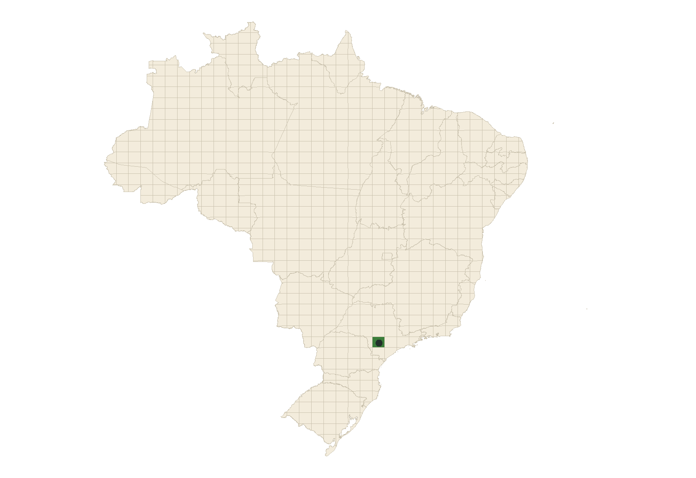

Capítulo 4 Aquisição dos mapas
Toda análise começa com uma área de estudo e com um objeto de mapas. Há quatro vias para chegar a ele: o download seletivo dos recortes do MapBiomas, a coleção nacional gravada no computador, a leitura seletiva por HTTP e uma pasta local com mapas de qualquer coleção. Todas levam ao mesmo objeto, usado pelas demais funções do pacote.
Área de estudo
A área é um polígono em qualquer sistema de coordenadas, gravado como
GeoPackage (.gpkg), shapefile (.shp, com o .prj) ou GeoJSON, ou já
carregado como objeto sf. O caminho pode vir com ou sem extensão, ou ser a
pasta que contém um único arquivo de área; com .gpkg e .shp de mesmo nome,
vale o .gpkg. O pacote já traz o limite do campus Lagoa do Sino da UFSCar,
usado neste capítulo:
ufscar <- system.file("shp", "UFSCar.shp", package = "biomastats")Um shapefile é um conjunto de arquivos. Sem o .prj, ele perde o sistema de
coordenadas, e o carregamento para com um aviso. Ao copiar ou enviar uma área,
inclua todos os arquivos de mesmo nome ou prefira o GeoPackage, que é um
arquivo só.
Quando não há uma área à mão, make_polygon() desenha a área a partir de
um ponto central, de uma forma ("circle", "square" ou "hexagon") e da
largura total em km (size), que corresponde ao diâmetro do círculo, ao lado do
quadrado ou à distância entre vértices opostos do hexágono. Um hexágono de
cerca de 12,5 km² centrado no campus, como a área de exemplo da Parte II, sai
assim:
area <- make_polygon(lat = -23.605, lon = -48.529, size = 4.4,
shape = "hexagon")make_polygon() grava o resultado como polygon.shp na pasta shp do pacote
instalado e substitui o arquivo anterior. Para guardar uma área, salve o objeto
devolvido (area$polygon) com sf::st_write() em uma pasta sua.
O MapBiomas divide o Brasil em recortes (tiles), e compare_shapefiles()
indica quais deles cobrem a área. A Lagoa do Sino cabe inteira no recorte 93:
unique(compare_shapefiles(ufscar))[1] 93
Figura 4.1: Grade de recortes usada na aquisição seletiva. Em destaque, o recorte 93, que contém a Lagoa do Sino (ponto).
Via 1: download seletivo
Nesta via, o pacote baixa da API do Bioma Stats apenas os recortes e os anos de que a área precisa. Se ela cruza mais de um recorte, os vizinhos são unidos antes do recorte final e da máscara pelo limite. Os arquivos ficam na pasta indicada e são reaproveitados nas execuções seguintes.
mapas <- load_rasters(ufscar, start = 1985, end = 2024, method = "download",
export_folder_path = "mapbiomas-recortes")Via 2: coleção nacional local
Aqui o mapa nacional de cada ano é baixado uma única vez. Depois disso, qualquer área pode ser recortada dele sem internet, o que torna esta via a mais indicada para muitas áreas ou para áreas grandes.
download_mapbiomas(dest_dir = "collection_10", data_type = "cover",
collection = 10, time_range = c(1985, 2024))
mapas <- load_rasters(ufscar, start = 1985, end = 2024, method = "library",
import_folder_path = "collection_10")As duas vias produzem o mesmo objeto: para a área de exemplo da Lagoa do Sino, os 40 mapas recortados da coleção nacional são idênticos, célula a célula, aos obtidos pelo download seletivo.
Via 3: leitura seletiva por HTTP
Os mapas anuais do MapBiomas ficam num repositório público, em GeoTIFFs
divididos em blocos. Com method = "http", load_rasters() lê só os blocos que
cobrem a área, sem login e sem baixar o arquivo nacional inteiro. O catálogo
reúne as coleções disponíveis, do Brasil (30 m e 10 m) e de outros países e
regiões:
catalogo <- raster_catalog()
colunas <- c(Produto = "id", `Resolução (m)` = "resolution_m",
`Primeiro ano` = "first_year", `Último ano` = "last_year")
tabela(stats::setNames(catalogo[, colunas], names(colunas)), 0)| Produto | Resolução (m) | Primeiro ano | Último ano |
|---|---|---|---|
| mapbiomas_brasil_c11 | 30 | 1985 | 2025 |
| mapbiomas_brasil_c10 | 30 | 1985 | 2024 |
| mapbiomas_brasil_c9 | 30 | 1985 | 2023 |
| mapbiomas_brasil_10m_c4 | 10 | 2017 | 2025 |
| mapbiomas_argentina_c3 | 30 | 1985 | 2025 |
| mapbiomas_bolivia_c4 | 30 | 1985 | 2025 |
| mapbiomas_chile_c1 | 30 | 2000 | 2022 |
| mapbiomas_colombia_c3 | 30 | 1985 | 2024 |
| mapbiomas_ecuador_c4 | 30 | 1985 | 2025 |
| mapbiomas_paraguay_c1 | 30 | 1985 | 2022 |
| mapbiomas_peru_c4 | 30 | 1985 | 2025 |
| mapbiomas_uruguay_c1 | 30 | 1985 | 2022 |
| mapbiomas_venezuela_c3 | 30 | 1985 | 2024 |
| mapbiomas_indonesia_c5 | 30 | 1990 | 2025 |
| mapbiomas_amazonia_c5 | 30 | 1985 | 2022 |
| mapbiomas_chaco_c4 | 30 | 1985 | 2022 |
| mapbiomas_pampa_c5 | 30 | 1985 | 2024 |
| mapbiomas_bosque_atlantico_c3 | 30 | 1985 | 2022 |
O produto é escolhido pelo id. Com export_folder_path, as janelas lidas ficam
gravadas como produto_ano.tif, junto com a área (area.gpkg):
mapas_http <- load_rasters(ufscar, start = 2023, end = 2024, method = "http",
product = "mapbiomas_brasil_c10",
export_folder_path = "mapas-lagoa")Qualquer outro GeoTIFF anual em blocos também pode ser lido, com url e
{year} no lugar do ano. As coleções do Brasil usam a legenda do MapBiomas; as
de outros países têm legendas próprias, que entram pelo dicionário (próxima
seção).
Via 4: pasta local, de qualquer coleção
Mapas de outras origens (janelas gravadas pela via 3, MapBiomas de 10 m, mapas
estaduais, classificações próprias) entram por uma pasta com um GeoTIFF por ano,
nomeados como prefixo_ano.tif. load_local_rasters():
- confere cada arquivo: uma camada, sistema de coordenadas, códigos inteiros e cobertura da área;
- harmoniza todos os anos pela grade do primeiro, com o vizinho mais próximo, que não mistura códigos de classe;
- recorta e mascara pela área e trata os pixels sem dado (
nodata, 0 por padrão).
A área pode estar na própria pasta. Mapas que cubram só parte da área, como janelas gravadas para outra região, são recusados:
mapas_relidos <- load_local_rasters(folder = "mapas-lagoa", collection = 10)Quando a coleção usa a legenda do MapBiomas, collection = 10 traz nomes e
cores. Para outra legenda, class_dictionary() monta um modelo com os códigos
presentes e depois lê o dicionário preenchido (código, nome e cor, em português
ou inglês):
modelo <- class_dictionary(mapas_relidos)
write.csv(modelo, "legenda.csv", row.names = FALSE)
dicionario <- class_dictionary(mapas_relidos, file = "legenda.csv")
mapas_relidos <- load_local_rasters(folder = "mapas-lagoa", dictionary = dicionario)Qual via usar
| Download seletivo | Coleção nacional | Leitura por HTTP | Pasta local | |
|---|---|---|---|---|
| Coleções | MapBiomas Brasil | MapBiomas Brasil | catálogo ou URL | qualquer uma |
| Transferência | recortes da área | ~28 GB, uma vez | só a janela da área | nenhuma |
| Internet | na primeira execução | só no download | sim | não |
| Mais indicada para | poucas áreas | muitas áreas, uso offline | 10 m, outros países, poucos anos | mapas próprios e já gravados |
Contexto ampliado
Índices de conectividade sofrem efeito de borda: o limite da área corta
fragmentos e esconde trampolins do lado de fora. context_m amplia a leitura com
uma faixa ao redor da área, em metros. O objeto guarda a área original em
focal, usada pelas análises de conectividade (capítulo
13):
mapas_contexto <- load_rasters(ufscar, start = 2024, end = 2024, method = "http",
product = "mapbiomas_brasil_c10", context_m = 2000)O objeto de mapas
As quatro vias devolvem uma lista com o limite da área (shape), o período
(time_range), um mapa por ano (raster) e a coleção (collection). Ela também
guarda a origem dos mapas (source), o que permite recarregar uma área maior
pela mesma via; o dicionário de classes (class_dictionary), nas coleções locais;
a área original (focal), com contexto; e os detalhes da leitura (metadata).
Esse objeto pode ser salvo e compartilhado, o que dispensa repetir a aquisição:
O pacote já inclui o objeto de mapas da área de exemplo da Lagoa do Sino, de 1985 a 2024, que é usado em toda a Parte II.